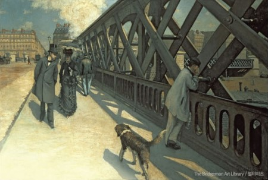
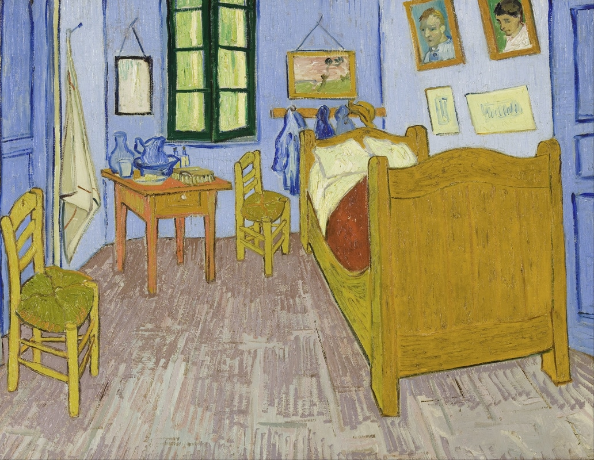

No perspective
 Chaekgado · Artist unknown
Chaekgado · Artist unknown
With perspective
 The Last Supper · Leonardo da Vinci
The Last Supper · Leonardo da Vinci
An intense, dynamic feeling

Vanishing point
Le Pont de l'Europe · Gustave Caillebotte
A cozy, settled feeling

Vanishing point
Bedroom in Arles · Vincent van Gogh
A balanced, majestic feeling
 Vanishing point
The School of Athens · Raphael
Vanishing point
The School of Athens · Raphael
Couldn't load the artwork.
Raphael · The School of Athens / Vatican Museums ↗